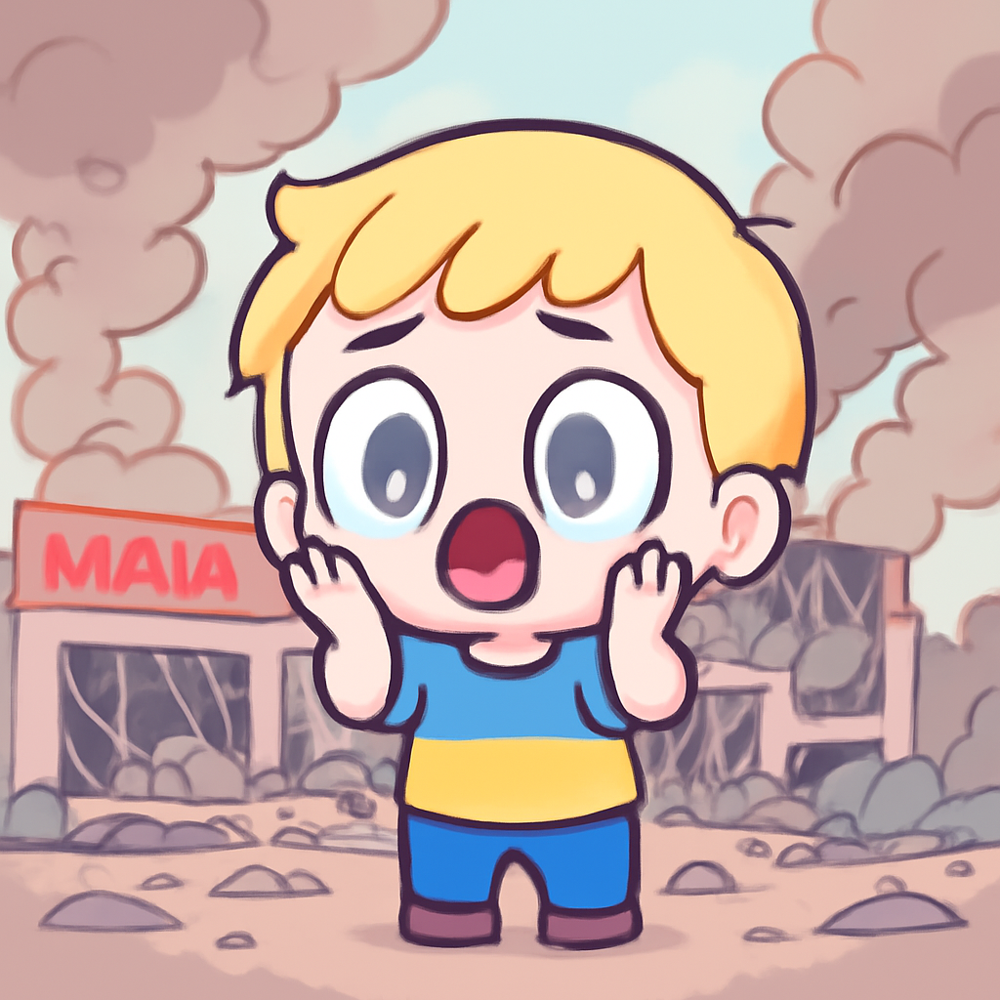
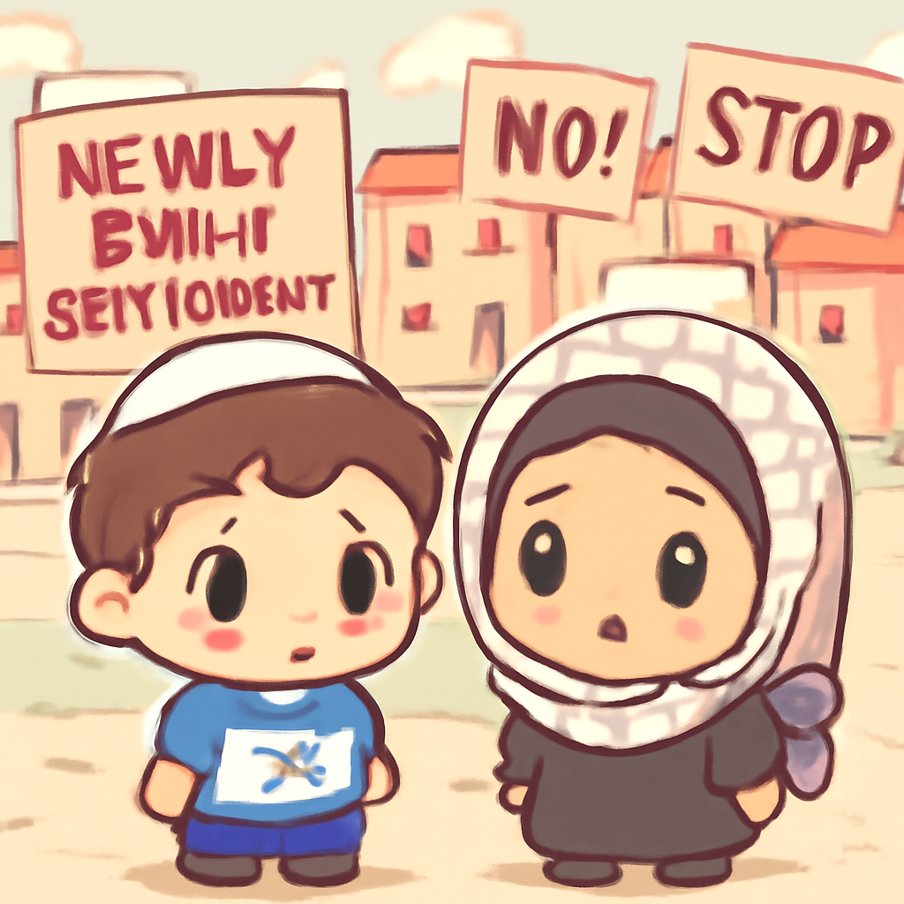
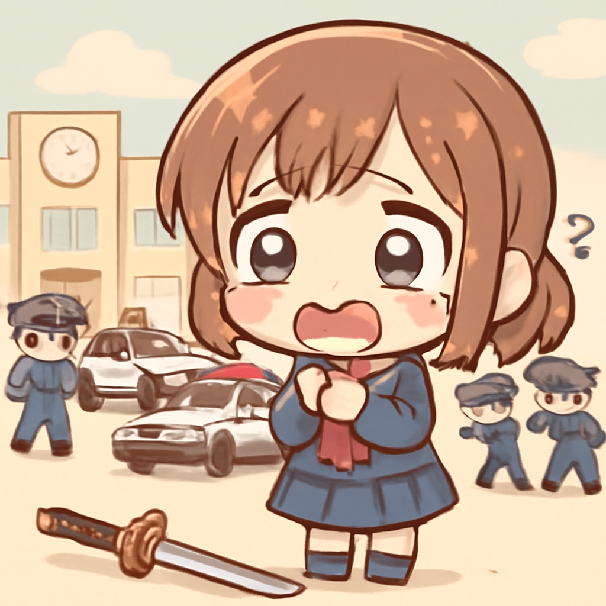

其一 · 烏克蘭基輔 · 俄羅斯無人機攻擊商場
烏克蘭一商場遭俄羅斯無人機襲擊，造成15人死亡

在烏克蘭基輔，俄羅斯的雙重無人機攻擊襲擊了一家商場，造成15人喪生，130人受傷，其中包括23名兒童。這起事件再次顯示了戰爭對平民的影響，讓人擔心這場衝突會進一步升級。看來，恐怖的購物經歷不只是黑五的專利。
🔗 原始新聞 ↗
2026-08-22 · 以古觀今，以笑抗愁
烏克蘭一商場遭俄羅斯無人機襲擊，造成15人死亡

在烏克蘭基輔，俄羅斯的雙重無人機攻擊襲擊了一家商場，造成15人喪生，130人受傷，其中包括23名兒童。這起事件再次顯示了戰爭對平民的影響，讓人擔心這場衝突會進一步升級。看來，恐怖的購物經歷不只是黑五的專利。
🔗 原始新聞 ↗
以色列在西岸重新建立定居點，當地居民感到恐懼

以色列在西岸重新建立了關閉的定居點，約有30個家庭搬進去，這讓周圍的巴勒斯坦居民感到恐懼。這一行動引發了國際社會的抗議，顯示出以色列政府的民族主義立場依然強硬。看來，這場地產交易不僅僅是換個地方這麼簡單。
🔗 原始新聞 ↗
瑞典一所學校發生劍擊事件，造成一人死亡

在瑞典斯德哥爾摩，一名18歲的男子在學校內發動劍擊事件，造成一人死亡，三人受傷。嫌疑人已被逮捕，警方正在調查事件背後的動機。這樣的暴力事件讓人不禁思考：學校本應是知識的殿堂，怎麼會變成了戰場？
🔗 原始新聞 ↗
加拿大一所錫克寺廟發生刺傷事件，兩人受傷
在加拿大溫哥華的一所錫克寺廟，發生了刺傷事件，造成兩人受傷。目前警方已經逮捕一名嫌疑人，並在調查是否為仇恨犯罪。這起事件再次提醒我們，宗教場所應是和平的地方，而不是暴力的溫床。
🔗 原始新聞 ↗
德國調查發現與俄羅斯有關的武器藏匿事件
德國正在調查一個武器藏匿事件，據報導這些武器可能與俄羅斯有關，並用於進行暗殺行動。這一發現再次引發了對俄羅斯在國際間活動的擔憂，顯示出全球安全形勢的複雜性。看來，這不僅是找武器的問題，還是一場國際間的貓捉老鼠遊戲。
🔗 原始新聞 ↗